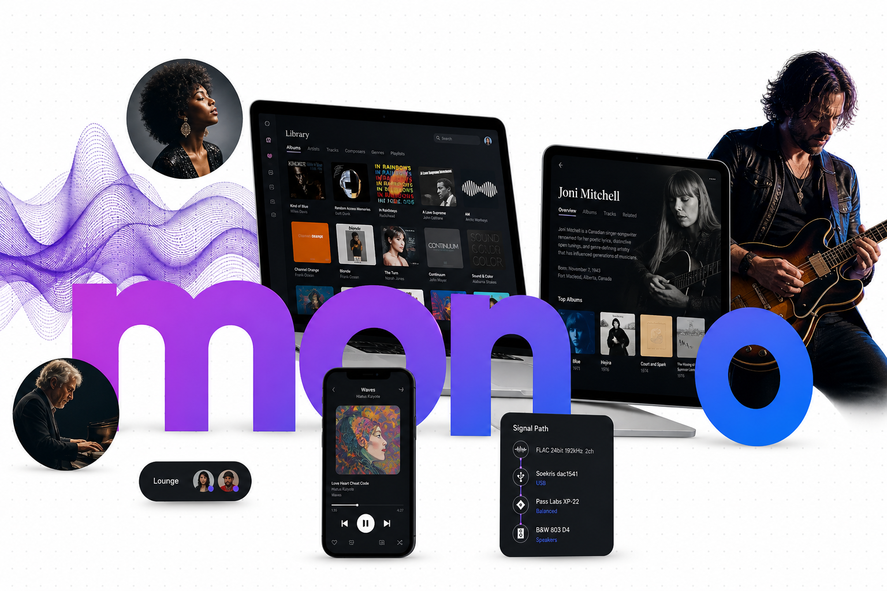
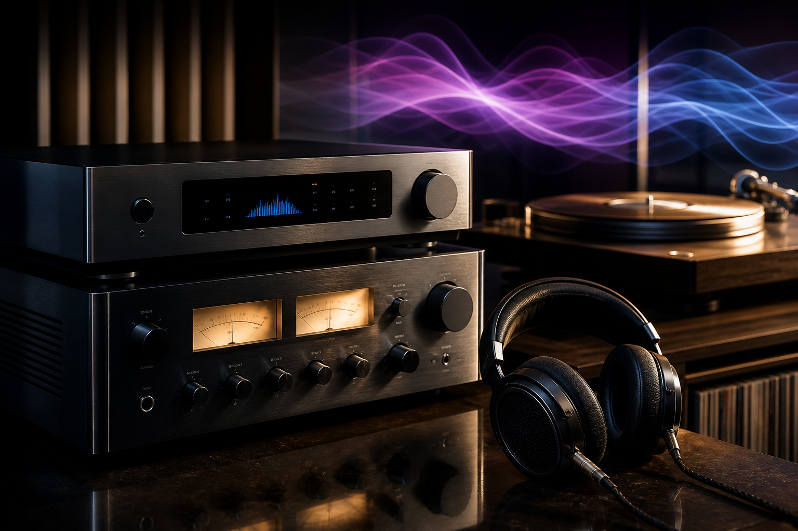

슈퍼팬을 위한 음악 경험.
로컬 파일과 Tidal · Qobuz를 한 라이브러리로 모으고, 바이오·리뷰·가사·크레딧·위키 이력을 곡 옆에 붙입니다. 탐색은 Core 로컬에서 바로 이뤄집니다.
더 알아보기 ⟶
혼자 듣는 하이파이와, 떨어져 있어도 같은 박자로 듣는 공동 청음. Mono는 음질 경로를 건드리지 않고 라운지를 올립니다.
Open · Invite · Host Queue · Audiophile. 듣는 방식에 맞춰 방을 고르면 됩니다.
더 알아보기로컬 파일과 Tidal · Qobuz를 한 라이브러리로 모으고, 바이오·리뷰·가사·크레딧·위키 이력을 곡 옆에 붙입니다. 탐색은 Core 로컬에서 바로 이뤄집니다.
더 알아보기 ⟶
담장 안의 스트리밍 앱이 아닙니다. WASAPI/ASIO Exclusive, USB DAC, 네트워크 Output, 멀티 존까지 — 집 안의 소리 나는 곳으로 보냅니다.
더 알아보기 ⟶
음악을 듣는 방법은 많습니다. Mono가 다른 이유, 그리고 하이파이와 라운지가 한 시스템에 모이는 이유를 알려 드립니다.